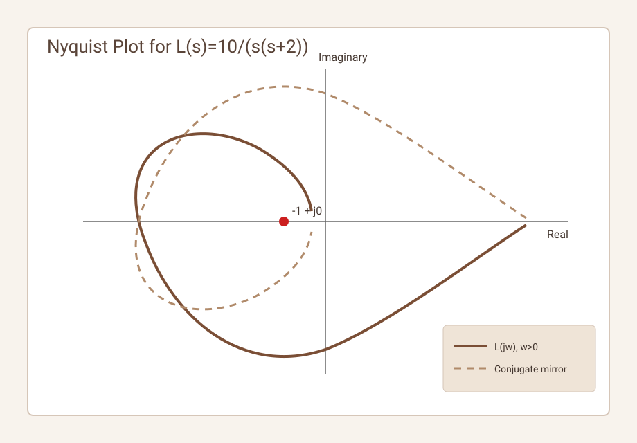
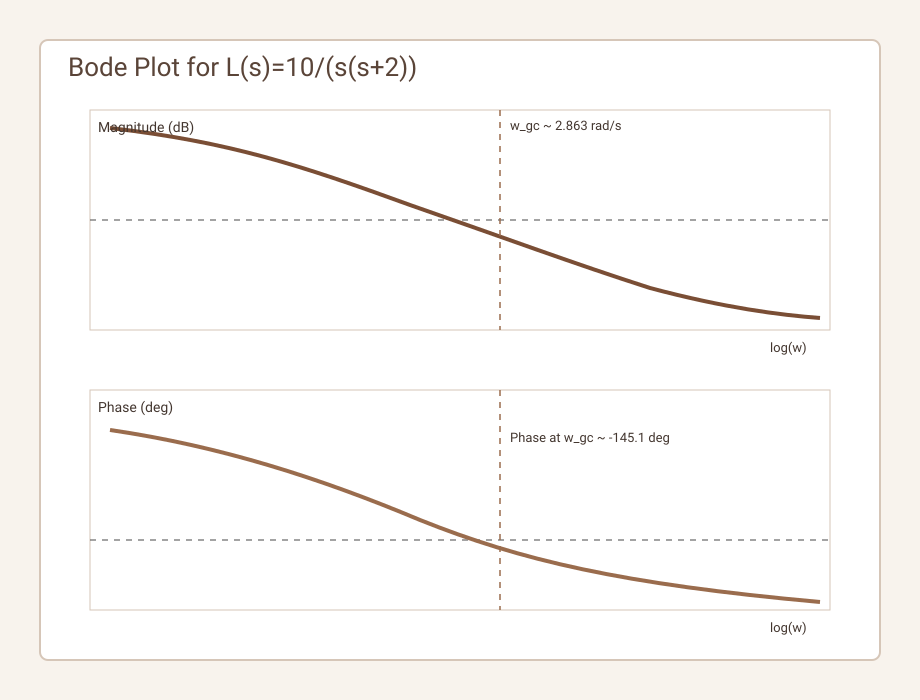
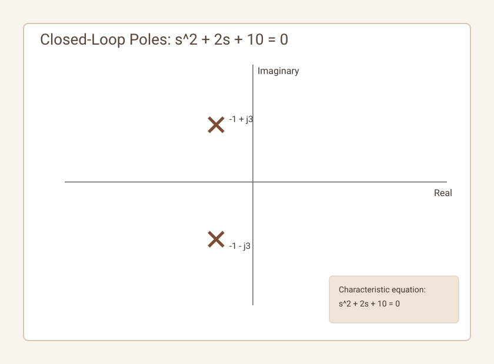

Share on LinkedIn Back to All Blogs
Complete Stability Analysis Using Nyquist Criterion
1. Mathematical Foundation
For a feedback system
T(s)=L(s)/(1+L(s)), L(s)=G(s)H(s)closed-loop poles are roots of
1+L(s)=0Using argument principle on the standard Nyquist contour:
N=Z-Pwhere:
N: net clockwise encirclements of-1+j0by Nyquist plot ofL(s)P: number of open-loop poles ofL(s)in the right-half plane (RHP)Z: number of closed-loop poles in the RHP
So:
Z=N+PClosed-loop stability requires Z=0.
2. Important Practical Caveat
If L(s) has poles on the imaginary axis (for example at s=0), use the
modified Nyquist contour with a small indentation around those poles. The direct statement
P=0 is only about RHP poles; imaginary-axis poles are handled by contour
deformation,
not by adding to P.
3. Corrected Worked Example
Given:
L(s)=10/(s(s+2))3.1 Open-loop poles
- poles at
s=0ands=-2 - RHP pole count:
P=0 - one imaginary-axis pole at origin -> use indented contour
3.2 Closed-loop stability check
Closed-loop characteristic equation:
1+10/(s(s+2))=0
=> s^2+2s+10=0Roots:
s=-1 +/- j3Both roots are in LHP, so closed-loop is stable (Z=0). Nyquist conclusion must match
this.

-1+j0.
4. Corrected Gain Margin and Phase Margin for the Example
For
L(jw)=10/(jw(jw+2))4.1 Gain crossover frequency
Solve |L(jw)|=1:
10/(w*sqrt(w^2+4))=1
=> w^4+4w^2-100=0Let y=w^2:
y^2+4y-100=0
=> y=-2+2*sqrt(26) ~= 8.198So:
w_gc ~= 2.863 rad/s4.2 Phase at gain crossover
angle L(jw) = -90 deg - tan^-1(w/2)At w_gc:
angle L(jw_gc) ~= -90 deg - tan^-1(1.431) ~= -145.1 degHence:
PM = 180 deg + angle L(jw_gc) ~= 34.9 deg4.3 Gain margin
For this ideal plant, phase reaches -180 deg only asymptotically
(w->infinity),
so there is no finite phase crossover frequency. Therefore ideal-model gain margin is infinite.
Note: in real systems, additional delay/high-frequency poles typically make GM finite.

5. Relative Stability Interpretation (Corrected)
- Nyquist curve closer to
-1-> lower damping and higher overshoot tendency. - Nyquist curve farther from
-1-> better damping margin. - Passing through
-1-> closed-loop marginal/unstable boundary.
6. M-Circle and N-Circle Usage
For unity feedback:
|L/(1+L)| = MM-circles and N-circles are valid graphical tools to estimate closed-loop frequency response and resonance trends.
Use them with these constraints:
- Dominant second-order behavior should be approximately valid.
- Significant delays/non-minimum-phase zeros reduce correlation quality.
- Readings are approximate unless verified numerically.
7. Time-Domain Correlation Caveats
The relation
zeta ~= PM/100is only a rule of thumb, usually acceptable for moderate PM ranges (about 30 to 70 deg) and near second-order dominant systems. Do not use as an exact identity.
A safer workflow is:
- Use Nyquist/Bode to ensure stability margins.
- Estimate damping/overshoot from PM and resonance trends.
- Confirm with closed-loop pole locations or simulation.

s^2+2s+10=0.
8. Summary for the Given Plant
For L(s)=10/(s(s+2)):
P=0(RHP poles)- one pole at origin requires contour indentation
- closed-loop poles:
-1 +/- j3-> stable - corrected phase margin: about
34.9 deg - ideal gain margin: infinite